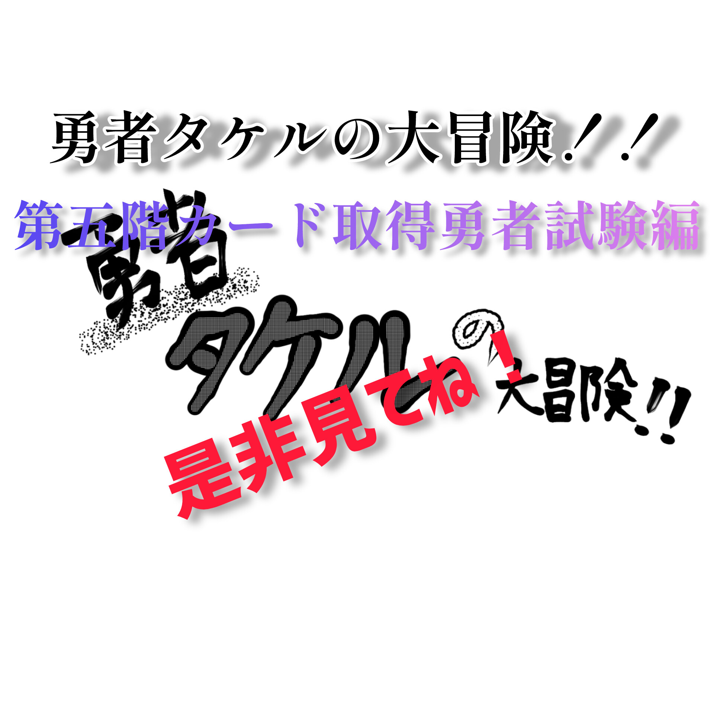
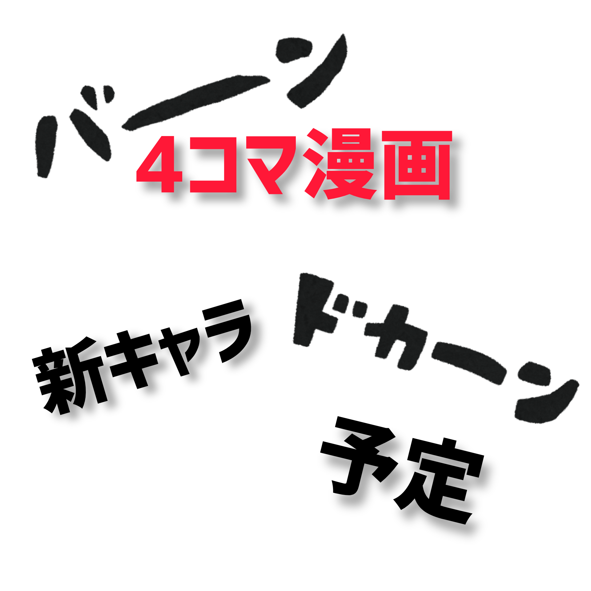
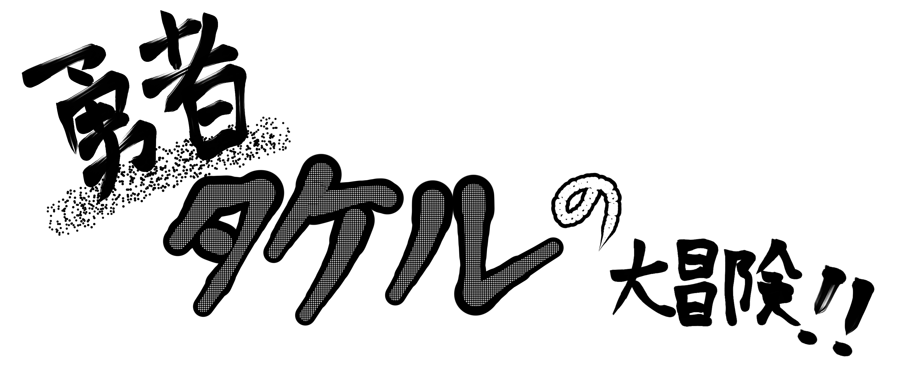

やっと終わったぜ…て感じです。(θ‿θ)
長いので章で分けることにしました。「ピコル」という人が登場します。
今回は魔法を持った人をたくさん出したいと思っています。
4コマ漫画第53話は新キャラが登場する予定です。
となり村に着いたタケルは、謎の敵と出くわす。タケルはやられそうになるが…
前回作ったサイトはcrayonというサイト作成アプリを使用していたのですが、今回はhtmlコードでイチから作っていますので前回よりクオリティーが落ちてます（笑） あと、WMと関係のない事をサイトに掲示することがあります。興味がなかったら無視をお願いします。